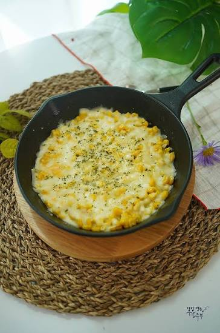
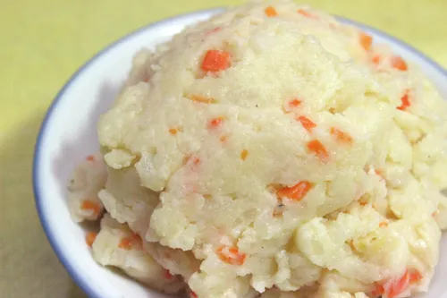
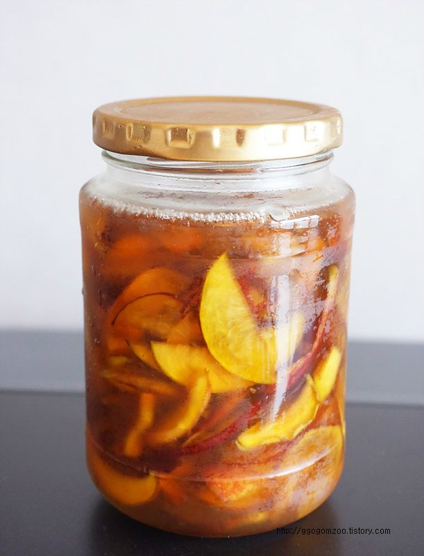
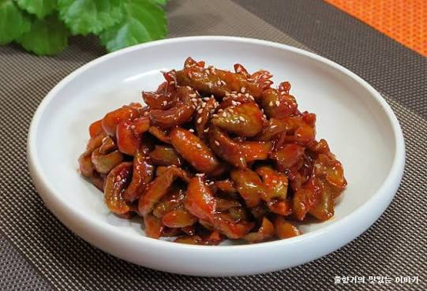
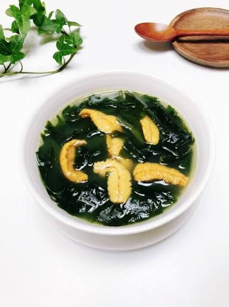
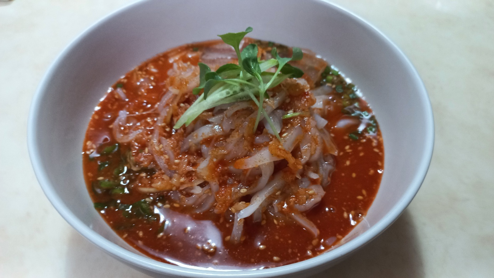

초당 옥수수 콘치즈 🌽
조리 순서
1. 초당 옥수수는 칼로 알맹이만 분리해 줍니다.
2. 팬에 버터를 두르고 옥수수를 가볍게 볶아줍니다.
3. 마요네즈와 설탕, 후추를 조금 넣고 섞은 뒤 모짜렐라 치즈를 듬뿍 올립니다.
4. 뚜껑을 닫고 치즈가 녹을 때까지 약불에서 녹여 완성합니다.
지금이 가장 맛있는 식재료로 쉽게 만드는 홈쿡 가이드

1. 초당 옥수수는 칼로 알맹이만 분리해 줍니다.
2. 팬에 버터를 두르고 옥수수를 가볍게 볶아줍니다.
3. 마요네즈와 설탕, 후추를 조금 넣고 섞은 뒤 모짜렐라 치즈를 듬뿍 올립니다.
4. 뚜껑을 닫고 치즈가 녹을 때까지 약불에서 녹여 완성합니다.

1.잘 익힌 감자의 물기를 제거 후 잘 으깨둡니다.
2.소금과 후추로 간을 맞추고 넣고싶은 야채도 손질해둡니다.
3.생크림 2큰술또는 우유를 소량 넣고 잘 섞어줍니다.
4.완성된 샐러드는 빵과 함께 즐기면 좋습니다.

1. 복숭아는 깨끗이 씻어 씨를 제외하고 잘게 깍둑썰기 합니다.
2. 복숭아와 설탕을 1:1 비율로 잘 섞어 병에 담아 청을 만듭니다.
3. 냉장고에서 2~3일 정도 숙성시킨 뒤, 물이나 탄산수에 타서 음료로 즐기거나 요리에 활용합니다.

1. 매실을 깨끗이 씻어 물기를 제거 후 꼭지를 따 5~^등분냅니다.
2. 과묵에 천일현 2큰술정도 넣고 1~2시간 절여줍니다.
3. 설탕 버무리기 (2차 절임): 절여진 매실에 준비한 설탕의 80~90%를 넣고 버무린 뒤 보관 용기에 담습니다.
4.실온에서 하루 정도 두어 설탕이 녹으면 김치냉장고에 넣어 숙성시킵니다.(3개월소요) .

1. 건미역을 찬물에 불려 이후 물기를 짜내 손질해둡니다.
2. 들기름 1큰술과 미역을 볶다 국간장으로 간을 맞춥니다.
3. 미역이 부드럽게 익으면 다시마육수나 물을 넣고 끓입니다.
4. 잘 끓인 미역국에 약불을 유지하며 성개알을 넣고 끓입니다.

1. 육수 만들기: 냉면 육수에 초고추장과 식초를 섞은 후,
요리하는 동안 냉동실에 잠시 넣어 살얼음을 만듭니다. .
2. 고명 야채들을 손질해둡니다. .
3. 한치는 내장과 뼈, 껍질을 제거한 뒤 먹기 좋은 크기로 얇게 채 썰어 줍니다.
4. 손질된 야채를 깔고 한치를 올린후 육수를 부어 완성합니다 .